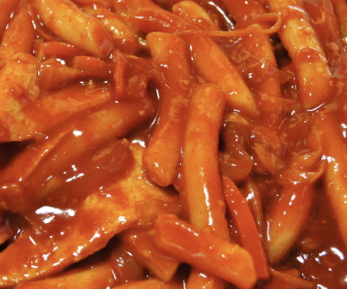

Tteok-bokki or stir-fried rice cakes is a popular Korean food made from small-sized garae-tteok.

1. Prepare rice cake, fish cake, hot pepper paste, sugar and onions.
2. Boil 3 cups of water in a pot.
3. Put some hot pepper paste and sugar.
4. Add sliced onions, rice cake and fish cake then mix them together.
5. Boil it until it's well cooked.